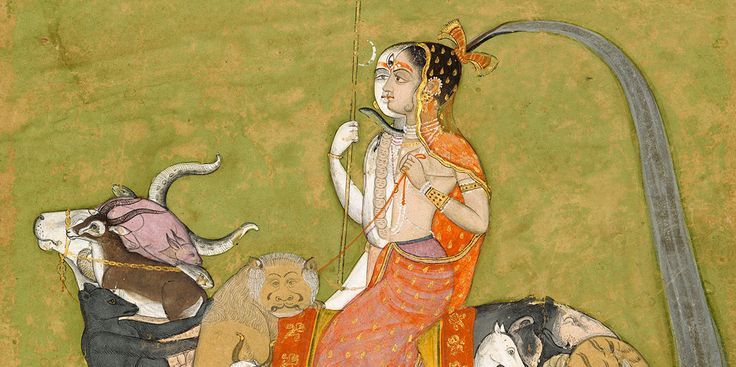
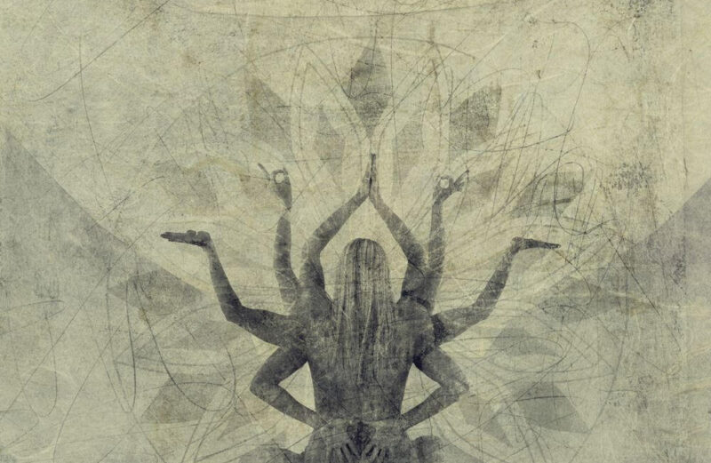

“आगम” शिवमुखोक्त शास्त्र है जो पार्वती को सम्बोधित कर कहा गया है। इसी को “तन्त्र” नाम से भी जाना जाता है। “तन्त्र” शब्द “शिव” के सांसारिक विस्तार का बोधक है। यह “तनु” धातु से “त्रल” या “ष्ट्रन्” प्रत्यय जोड़कर निष्पन्न होता है। इस प्रकार तन्त्र शब्द से विस्तार अर्थ सङ्केतित होता है। यह विस्तार आत्मा का है। परमशिव स्वेच्छया अपने स्वातन्त्र्यवश अपने को सङ्कुचित कर जड़-चेतन के रूप में स्फुरित होते हैं। बाद में स्वयं अनेक उपायों के द्वारा अपने इस सङ्कोच को हटा कर स्वयं को अपने स्वातंत्र में स्वस्थ करते। परमशिव के विश्वरूप में स्फुरित और फिर अपने रूप में स्वस्थ होने की प्रक्रिया ही तन्त्र शास्त्र का वर्ण्य विषय है। तन्त्र एक व्यवस्था है—आत्मदर्शन की। यह एक राजमार्ग है; एक कला है; एक वैज्ञानिक विधि है जो द्रुत गति से आत्मसाक्षात्कार कराती है; पूर्ण अहंभाव की ओर ले जाती है। यद्यपि तन्त्र का एक स्वतन्त्र विषय के रूप में अपना अस्तित्व है तथापि यह मध्यवर्ती बिन्दु है। तन्त्र के पूर्व मन्त्र है और बाद में यन्त्र। इनमें से एक के बिना शेष दो अधूरे रहते हैं। पदार्थों के मूलरूप को जानना मन्त्र है। उनके संयोग और मिश्रण के द्वारा सम्भावित स्थितियों को जानना तथा मूर्त करना तन्त्र है। इस संयोग और मिश्रण को अङ्कों अक्षरों और रेखाओं के द्वारा चिह्नित करना यन्त्र है। एक ज्ञानातीत, निष्कल, निर्भिन्न अवाच्य अस्तित्व जिसे हम “परम” शब्द से सङ्केतित करते हैं जब अपने ऐश्वर्य से ज्ञानमय अवस्था को प्राप्त होता है तब मन्त्र बन जाता है और उसमें वर्णसमूह रूप पद की प्रधानता हो जाती है। यह ज्ञान जब क्रिया की अवस्था को प्राप्त होता है तब तन्त्र बन जाता है। मन्त्रों के जप से शरीरस्थ कोशों का विकास होता है और इस विकास से प्राप्त शक्ति के सहारे साधक चक्रों का भेदन करता है। इस क्रमिक चक्रभेदन की प्रक्रिया को प्रतीकपदार्थ चित्र अर्थात् यन्त्र के माध्यम से व्यक्त किया जाता है।

तन्त्र के दो पक्ष हैं—लोकपक्ष या व्यवहार पक्ष तथा लोकोत्तर या अध्यात्मपक्ष। विश्व और विश्व से परे उस अवाच्य “सम्वित” को विश्व विस्तार के माध्यम से समझना और फिर प्रकृति के रहस्यों पर पड़े आवरण को हटाते हुए उस प्रकृति को व्यक्ति के लिये उपयोगी बनाना तन्त्र का लोकपक्ष है और विस्तार का ज्ञान कर उसके मूल रूप को जानना इसका अध्यात्म पक्ष है। यही स्वरूपावस्थान या तन्त्रसाधना का चरम उद्देश्य है। वेद निवृत्तिपरक है अतएव केवल “मुक्ति” प्रदान करता है भले ही धर्म, अर्थ, काम उसके आनुषङ्गिक फल हैं किन्तु मुक्ति उसका चरम “लक्ष्य” है। चूँकि मुक्ति सामूहिक नहीं होती इसलिये वेद को व्यक्तिपरक माना जाता है। तन्त्र प्रवृत्ति और निवृत्ति दोनों का मार्ग है। प्रवृत्ति के द्वारा वह व्यक्ति और समाज दोनों का हित करता है। प्रवृत्ति मार्ग से चलकर निवृत्ति को अपनाते हुए सम्पूर्ण विश्व में “शिवत्त्व” का दर्शन और उस रूप में अपना तादात्म्य स्थापित करना तन्त्र का चरम प्रतिपाद्य है।
तन्त्र एक अन्वेषण की प्रक्रिया है। विज्ञान भी अन्वेषण करता है किन्तु वह बाह्य उपकरणों से बाह्य के अन्वेषण की बात सोचता है। बाह्य जगत् जितना विस्तृत है उतना ही आन्तर जगत् का भी विस्तार है। तन्त्र अन्तर्जगत् का अन्वेषण करता है। विज्ञान जड़ का अन्वेषण करता है। तन्त्र के अन्वेषण का विषय चेतन है; वह चेतन जो सर्वत्र व्याप्त है और “सार्वभौमिक—सम्वित”, “परमशिव” आदि नामों से जाना जाता है। संसार में दो ही तत्त्व उपलक्षित होते हैं “शिव” और “शक्ति”। आपाततः एवं भाषा की दृष्टि से दोनों भिन्न हैं। एक प्रथम व्याकरणिक व्यक्ती है दूसरा द्वितीय व्याकरणिक व्यक्ती है। प्रथम व्याकरणिक व्यक्ती पूर्ण है, द्वितीय व्याकरणिक व्यक्ती उससे अभिन्न प्रतिबिंब है। किन्तु परमार्थतः दोनों एक हैं। वस्तुतः प्रथम व्याकरणिक व्यक्ती ही द्वितीय व्याकरणिक व्यक्ती के रूप में स्फुरित है। “प्रथम व्याकरणिक व्यक्ती” के रूप में स्फुरित होने का इतिहास और “द्वितीय व्याकरणिक व्यक्ती” के “प्रथम व्याकरणिक व्यक्ती” के रूप में समाविष्ट होने की प्रक्रिया ही तन्त्र शास्त्र का प्रतिपाद्य है।

संस्कृत भाषा का अनुस्वार या बिन्दु (.) तन्त्र के चरमतत्त्व या महाशून्य का प्रतीक है। दो बिन्दु मिल कर “विसर्ग” होता है अर्थात् महाशून्य रूप शिव जब अपने को अपने में ही अपने से अलग कर लेता है तब विसर्ग अर्थात् सृष्टि का प्रारम्भ होता है, जो की शिव से अभिन्न है। यह विसर्ग (:) शिव और शक्ति की “यामल” या “शिवशक्तीसम्घट्ट” अवस्था का प्रतीक ह। दो से जब तीन बिन्दु की स्थिति बनती है तब त्रिकोण बनता है। इसमें एक त्रिकोण ऊर्ध्वसिरा “△” और दूसरा अधः सिरा “▽” है। पहला “शिव” का और दूसरा “शक्ति” का प्रतीक है। इन दोनों को मिला देने पर षट्कोण “⛥” बनता है जो “शिव” और “शक्ति” के सनातन सम्बन्ध का प्रतीक है।
संसार के समस्त पुरुष और स्त्री—शिव और शक्ति के प्रतीक हैं। यहाँ तक कि प्रत्येक शरीर में शिवांश और शक्त्यंश विद्यमान है। शरीर में मज्जा, शुक्र, प्राण और जीव शिवमूलक तथा अस्थि, चर्म, रक्त, मांस और मेदा शक्तिमूलक है। ये चार और पाँच नव प्रतीक श्रीचक्र के नव कोणों के माध्यम से व्यक्त किये जाते हैं। यह तो रही पिण्ड या शरीर की स्थिति। “यथा पिण्डे तथा ब्रह्माण्डे” सिद्धान्त के अनुसार ब्रह्माण्ड में भी यही स्थिति है। प्रकृति, महत्, अहङ्कार, तन्मात्राएँ और पञ्चमहाभूत—ये पाँच तत्त्व शक्तिमूलक तथा माया, शुद्ध विद्या, ईश्वर और सदाशिव ये चार शिवमूलक तत्व हैं। श्रीचक्र की आकृति पिण्ड और ब्रह्माण्ड के साम्य का रूप उपस्थापित करती है। तन्त्र इस स्वरूप का सर्वाङ्गीण परिचय कराता है। तत्त्वों के आवरण का भेदन करता हुआ साधक शुद्धविद्या आदि के सोपानों को पार करता हुआ बिन्दु, अर्द्धचन्द्र, रोधिनी, नाद, नादान्त, शक्ति, व्यापिनी, समना स्तरों को पार कर उन्मना स्थिति में पहुँच “द्वितीय व्याकरणिक व्यक्ती” और “प्रथम व्याकरणिक व्यक्ती” के रहस्य को हटाकर शिवसमावेश प्राप्त कर लेता है। यही तन्त्र का प्रतिपाद्य है।

शिवमुखोक्त शास्त्र के तीन प्रकार है—आगम, यामल और तन्त्र। आगम में सृष्टि, प्रलय, देवपूजा, मन्त्रसाधना, पुरश्चरण, ध्यान, योग, षटकर्म (मारण, सम्मोहन, उच्चाटन, विद्वेषण, आकर्षण और वशीकरण) का वर्णन मिलता है। यामल में सृष्टितत्त्व ज्योतिषवर्णन, नित्यकृत्य, सूत्र, वर्णभेद, जातिभेद, युगधर्म का विवेचन है । तन्त्र का विषय एवं क्षेत्र अत्यन्त विशाल है । इसमें सृष्टि प्रलय, मन्त्र निर्णय, देवसंस्थान, तीर्थवर्णन, आश्रमधर्म, वर्णव्यवस्था, भूतादिसंस्थान, यन्त्र-निर्णय, कल्पवर्णन, ज्योतिष, पुराणाख्यान, कोषकथन, व्रतकथा, शौचाशौचनिर्णय, स्त्रीपुरुष-लक्षण, राजधर्म, दानधर्म, युगधर्म, लोकव्यवहार और आध्यात्मिक विषयों का विशद वर्णन है। निष्कर्ष यह है कि आगम और यामल के विषयों के सहित समस्त भौतिक विस्तार और आध्यात्मिक अनन्त, तन्त्र के क्षेत्र में आता है।
